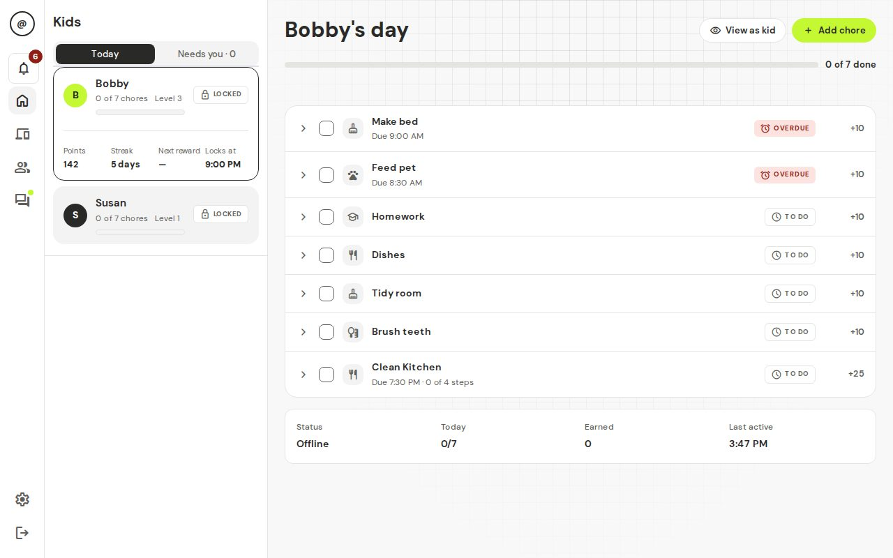
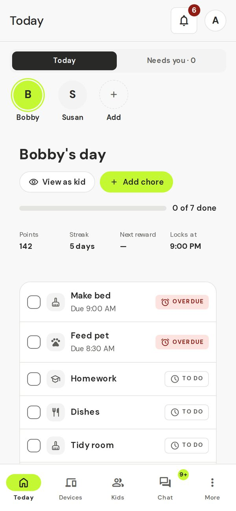
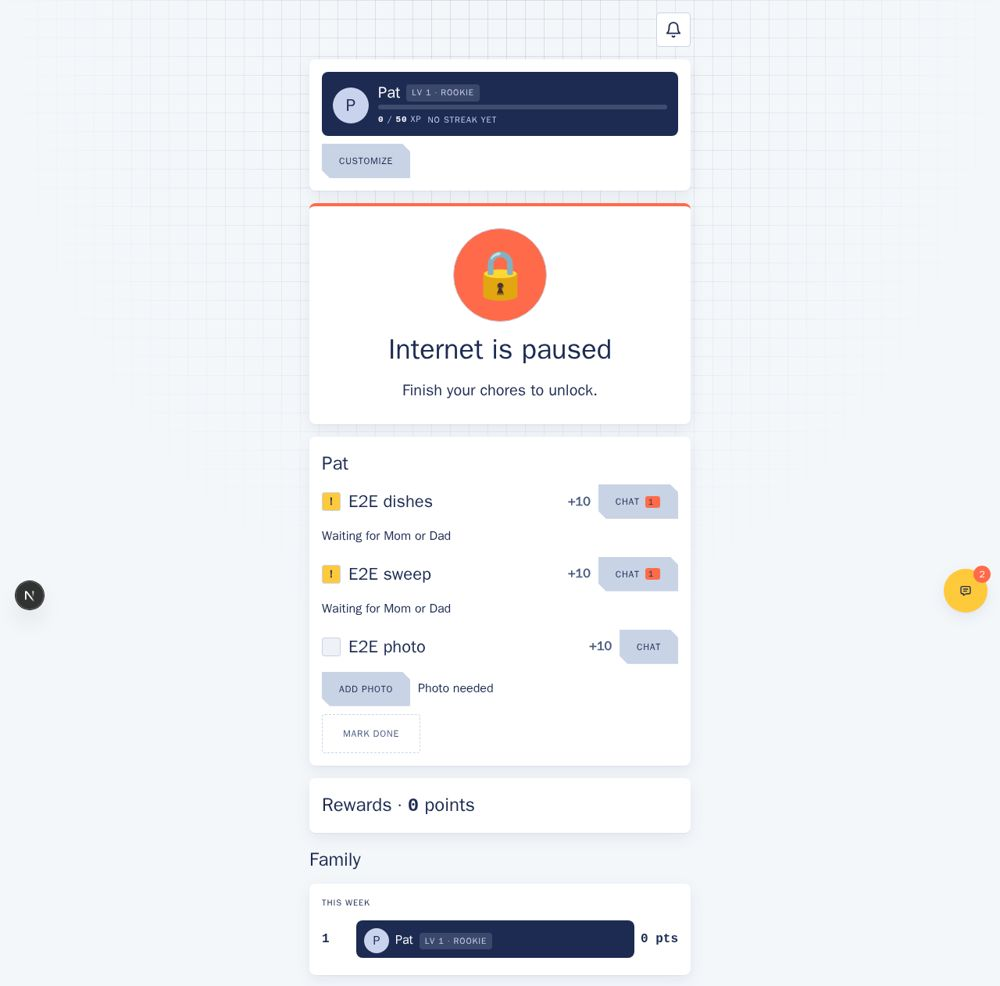
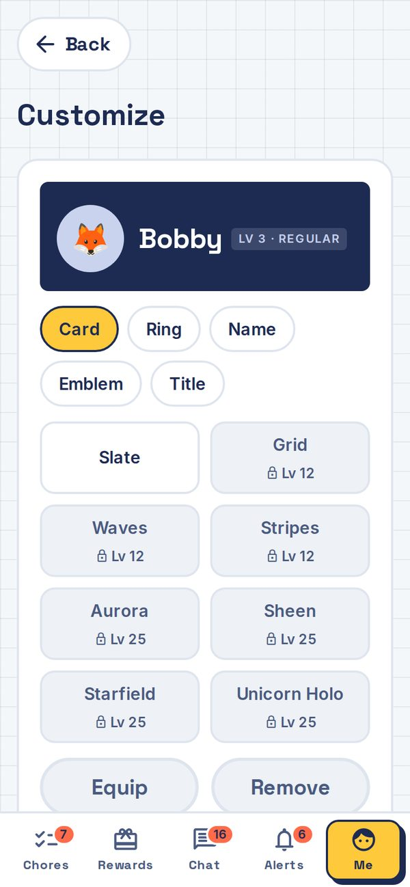
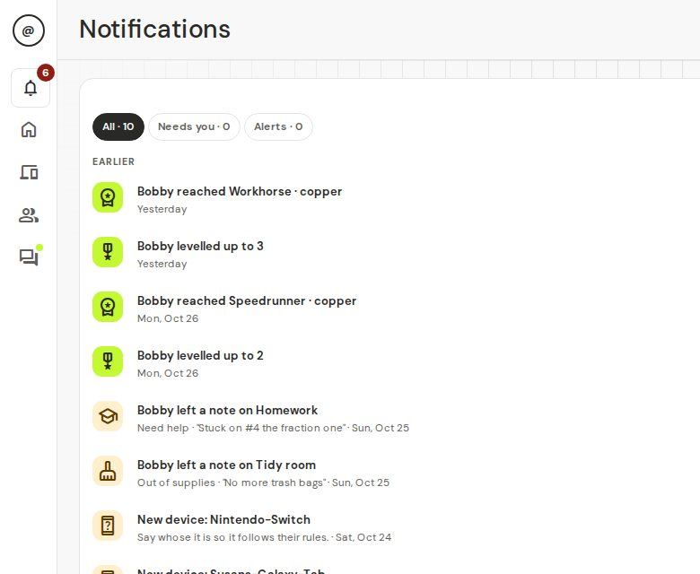

Chores first, then screens.
A free family app where kids do their chores, parents approve them, and the home internet only switches on once the chores are done. It runs on a small computer in your home — your family's data stays in your house.


How it works
Three simple steps, every day.
-
Feed the dogTo do+15
Kids get chores
Each morning, your kids see their list of chores for the day. Chores earn points, and points unlock rewards and extra screen time.
-
HomeworkNeeds OK+30
Kids submit for approval
When done, they tap "Done" and can add a photo as proof. Then they wait for your review.
-
HomeworkApproved+30
Internet comes back
You review in the app and approve or send back. Once approved, their internet is back on immediately.
What kids see
A simple, motivating interface.

Today's chores
Each chore shows points. Tap to see steps and add a photo as proof.

Levels & rewards
Earn badges, level up, and unlock flair in the Locker.
What parents see
Everything you need in one view.
Today
See each kid's chores at a glance: approved, waiting, or not started.

Needs you
One screen for everything waiting: chores, requests, and messages.
Is it right for my family?
t@sk4ce works best when you want chores tied to internet access.
What it does well
- Kids who are old enough to understand cause and effect (usually 8+).
- Families with home internet and an always-on computer (Raspberry Pi, laptop, even a phone).
- Parents who can check the app once a day or more.
- Kids who want something to work toward (points, levels, rewards).
Set it up in 20 minutes
Five straightforward steps.
-
Copy the one-line installer
Click the button to copy this command, then paste it into your terminal.
curl -fsSL https://sgtslaughta.github.io/tskfrce/install.sh | sh -
Let the installer run
It downloads t@sk4ce, asks a few questions, and starts the app. Wait 2–3 minutes. Your data stays on your computer.
-
Open the app on your phone or computer
Go to the IP address the installer gave you. It will show a setup wizard. See step-by-step instructions →
-
Add your family and kids
Create a parent account, then add your children and their devices. Follow the setup wizard guide →
-
Create a chore and go
Make a chore, give it to your kids, and you're ready. Learn the everyday routine →
Privacy
Your family's data belongs to you.
Stays in your home
t@sk4ce runs on a computer in your house. Chores, kids, points, chat, and photos never leave your network.
No accounts with us
We don't have a server. No sign-up, no passwords saved anywhere but on your box. You own your data.
No ads or trackers
t@sk4ce is free and open-source. We don't sell your data, show ads, or track anything. Ever.
GIFs are optional
Kids can use GIFs in chat only if you turn it on. They come from GIPHY through your home box — we never pass along who sent them.
Frequently asked questions
What computer do I need?
Any always-on Linux machine: a Raspberry Pi 4 or 5, an old laptop, a NAS, or a spare laptop running Ubuntu. Needs to be plugged in and connected to your home network. See What you need.
Do I need a special router?
No. t@sk4ce works with any router. Tested with TP-Link, Netgear, Eero, Asus, UniFi. With mesh, pick a main router. See router compatibility →
What if my internet goes down?
t@sk4ce still runs locally — chat and planning work. Chores can't be marked done until internet returns. By design: no internet, no rewarding.
Can I use it with devices outside my home?
t@sk4ce is designed for home network devices. If your kid's phone sometimes connects to home WiFi, it blocks when home and lets through when away. VPN access is planned.
What if a kid finds a workaround?
t@sk4ce flags common workarounds (hotspots, other networks) as "resisting" and alerts you. That's your cue to talk about trust. The app doesn't spy further.
Where's the manual?
The full guide is here. Check Troubleshooting for common issues.
Is this open source?
Yes! GPL-3.0. Code is on GitHub. Review, modify, learn.
For technical folks and contributors:
Architecture & engineering →